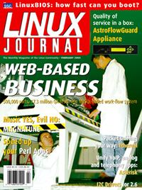

Shutdown Archive web server
Search:
Linux Journal
Issue #118/February 2004

Features
LAMP Development at Public Sector Web Sites
by Tom Adelstein
Government IT staff and open-source consultants are keeping public information open and accessible—and saving tax money too.
The REDACLE Work-Flow Management System
by Giovanni Organtini and Luciano M. Barone
To build a product with 500,000 parts, you need an enterprise-class work-flow management system.
Magnatune, an Open Music Experiment
by John Buckman
Even if you're not reinventing the music business, what can you do to help your Web site help customers?
DIY-IT: How Linux and Open Source Are Bringing Do-It-Yourself to Information Technology
by Doc Searls
A new balance of power in the IT market is giving customers control of their own information destinies.
Indepth
Improving Perl Application Performance
by Bruce W. Lowther
Get the most performance improvement for the least work.
Asterisk Open-Source PBX System
by Brett Schwarz
Integrate land lines and VoIP on your company phone system.
A Guided Tour of Ethereal
by Brad Hards
Troubleshoot your network and check security.
LinuxBIOS at Four
by Ronald G. Minnich
Will your favorite OS be your new favorite BIOS too?
Embedded
Driving Me Nuts I2C Drivers, Part II
by Greg Kroah-Hartman
Toolbox
Kernel Korner
I/O Schedulers
by Robert Love
Cooking with Linux
The Customer Is Always Served
by Marcel Gagné
Paranoid Penguin
Seven Top Security Tools
by Mick Bauer
Columns
EOF
Linux vs. SCO—A Foregone Conclusion
by Jim Ready
Reviews
AstroFlowGuard Appliance
by Jose Nazario
UNIX Systems Programming: Communication, Concurrency and Theory
by Ibrahim Haddad
Departments
Letters
upFRONT
From the Editor
Web Technolgies for Business Apps
Best of Technical Support
On the Web
New Products
Archive Index
Shutdown Archive web server
Search:
Copyright © 1994 - 2018
Linux Journal
. All rights reserved.